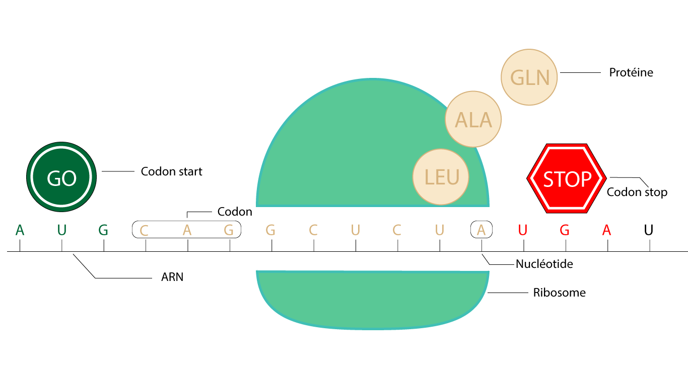
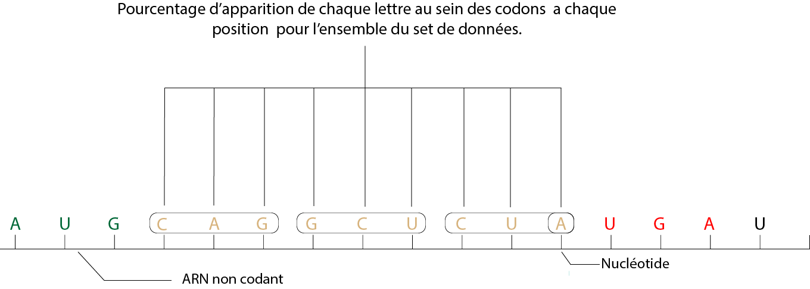
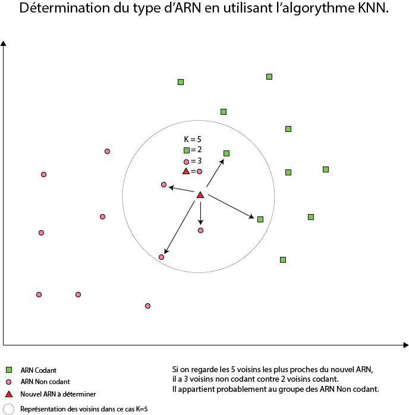

Projet de data science autour des données génomiques.
L’ensemble des mots relatifs à la bio informatique, à la génétique et à la data-science sont disponibles dans un lexique classé en ordre alphabétique à la fin du document.
L’objectif de mon stage au sein du Vlaams Instituut voor Biotechnologie et de l’université KU Leuven était de réaliser un modèle en R capable de détecter un ARN codant et non codant. Cette étude a pour objectif de fournir un outil aux biologistes qui souhaitent traiter en grandes quantités les ARN. Dans un premier temps, j'ai travaillé sur l’ARN non codant. L’objectif était d’isoler les codons responsables de la production de protéines. Afin de repérer ces différentes séquences, j’ai utilisé les codons ouvrants et fermant de la synthèse de protéines.
Pour un développeur, cette action s’apparente au repérage et à l’extraction de string avec pour point de départ et de fin des lettres spécifiques.
Schéma de la production de protéines à partir de l’ARN
Naxan Sewduth CC BY-SA 2.0
Dans un second temps, je voulais calculer le pourcentage d’apparition de chaque nucléotide dans la position des codons. J’ai donc réalisé ce travail pour les codons A, U, C et G pour chaque position possible dans le codon. Par la suite, j'ai réalisé le même procédé sur l’ARN codant. J’ai récupéré la liste des séquences réalisant la synthèse de protéines pour déterminer le pourcentage d’apparition de chaque nucléotide dans la position des codons.
Pour un développeur, cette action s’apparente à des statistiques avec l’utilisation de vecteurs.

Naxan Sewduth CC BY-SA 2.0
Enfin, j’ai travaillé sur un modèle de prédiction de l’ARN codant et non codant en utilisant l’algorithme k plus proches voisins. Dans un premier temps, j'ai entrainé mon modèle en utilisant les distances entre les valeurs de l’ARN codant et non codant afin de créer deux groupes. Dans un second temps, j’ai utilisé mon modèle pour déterminer la catégorie d’un nouvel ARN en fonction de ces voisins. J’ai ainsi fait la comparaison pour déterminer le groupe en utilisant 5 voisins (k=5). Mon stage prenant fin, je n’ai pas pu déterminer le taux d’erreurs de mon modèle afin d’ajuster le nombre de K pour avoir un résultat minimisant les erreurs.
Pour un développeur, cette action s’apparente à la création d’un modèle mathématique de prédiction en utilisant le k-nearest neighbors algorithm.
Naxan Sewduth CC BY-SA 2.0
Ce stage m’a permis d’améliorer mes aptitudes en Data science. J’ai eu également l’occasion de découvrir la bio-informatique.
Lexique :
ARN : L'acide ribonucléique ou ARN est une molécule indispensable à la vie. Cette molécule ressemble beaucoup à l'acide désoxyribonucléique (ADN), car elle est composée de quatre bases azotées dont trois communes à l'ADN et à l'ARN : A (adénine), G (guanine) et C (cytosine). Le T (thymine), de l'ADN est remplacé dans l'ARN par un U (uracile).
ARNm ou ARN messager : L’ARNm est un sous ensemble de l’ARN. Il est composé des nucléotides qui produisent des protéines.
ARN non codant : Un ARN non codant (ou ARNnm pour ARN non messager) est un ARN, issu de la transcription de l'ADN, qui ne sera pas traduit en protéine par les ribosomes.
Codon : Un codon est un ensemble de trois nucléotides.
Codon-start : Le codon-start est un triplet de nucléotides qui marque le début de la traduction de l’ARN messager en protéine.
Codon-stop : Un codon-stop est un triplet de nucléotides qui marquent la fin de la traduction de l’ARN messager en protéine.
K plus proches voisins : Les ‘k plus proches voisins’ ou k-nearest neighbors en anglais (d’où l’appellation knn) est une méthode non paramétrique dans laquelle le modèle mémorise les observations de l’ensemble d’apprentissage pour la classification des données de l’ensemble de test.
Cet algorithme est qualifié de paresseux (Lazy Learning) car il n’apprend rien pendant la phase d’entraînement. Pour prédire la classe d’une nouvelle donnée d’entrée, il va chercher ses K voisins les plus proches (en utilisant la distance euclidienne) et choisira la classe des voisins majoritaires.
Nucléotide : Ce sont les éléments de base d'un acide nucléique.
Ribosome : Les ribosomes sont des enzymes cellulaires qui assurent la traduction des ARN messagers en protéines.
Sources :
L’ensemble des informations de l’index sauf la note sur le K plus proches voisins viennent de Wikipédia et de Vikidia.
La note sur l’algorithme k plus proches voisins vient d’un article de Kenza Harifi Data Scientiste a la BNP Paribas.
Pour aller plus loin, cette publication aborde le même thème de manière plus complète et moins vulgariser.